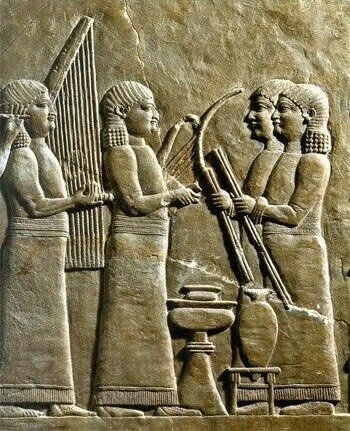
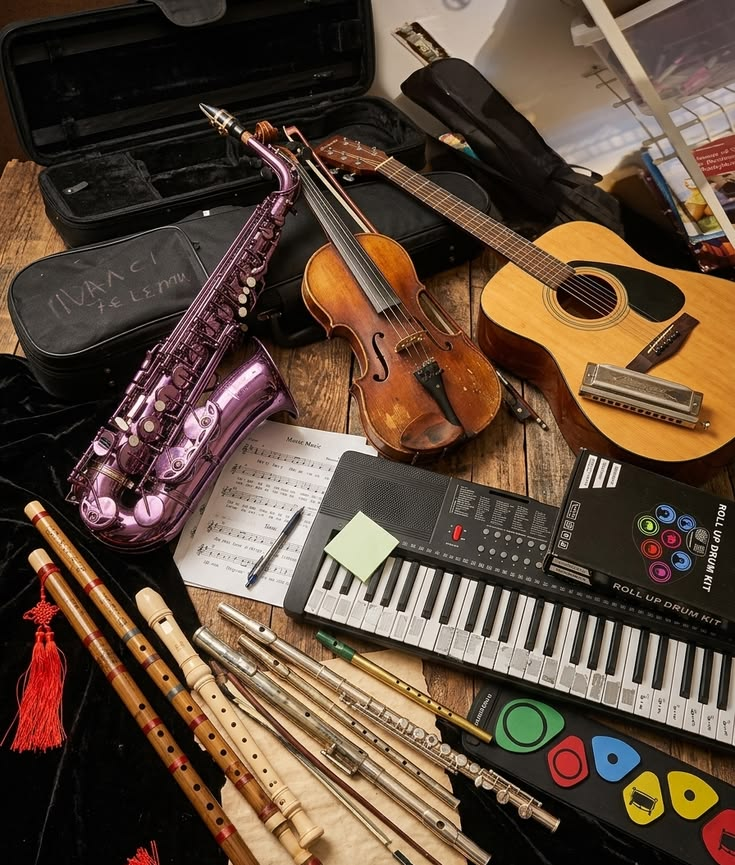
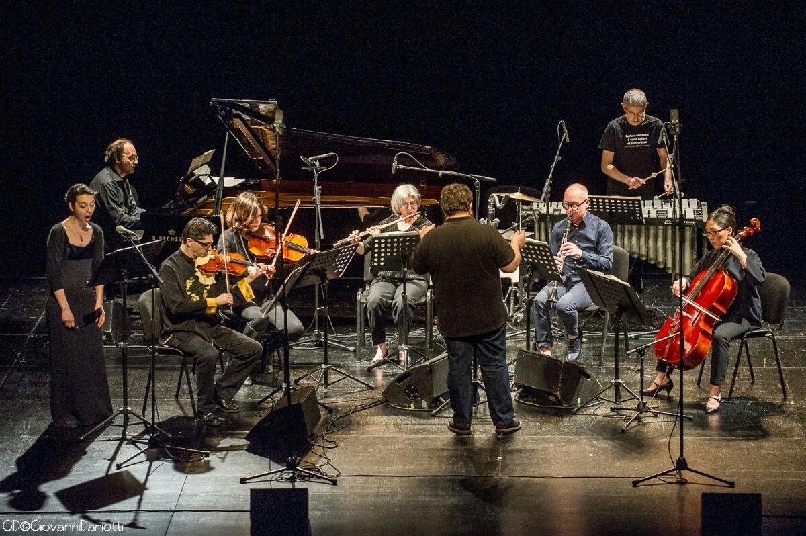

Primeras civilizaciones
La Antigüedad
La música acompañaba rituales, ceremonias y celebraciones. Civilizaciones como Egipto, Grecia y Mesopotamia desarrollaron instrumentos y teorías musicales.
La música ha acompañado al ser humano desde las primeras civilizaciones. A través de los siglos ha evolucionado, creando nuevos estilos, instrumentos y formas de expresión.
Desde los antiguos rituales hasta los sonidos digitales, la música ha acompañado a la humanidad, reflejando sus emociones, culturas y transformaciones.
Explora diferentes géneros musicales, conoce sus orígenes y descubre cómo han influido en el mundo.
Explorar géneros
Selecciona una tarjeta para descubrir su historia, sus características y sus instrumentos principales.
Compositores, orquestas y grandes obras.
Descubrir →Guitarras eléctricas, energía y rebeldía.
Descubrir →Melodías pegadizas y sonidos actuales.
Descubrir →Improvisación, ritmo y libertad creativa.
Descubrir →Emoción, expresión y raíces afroamericanas.
Descubrir →Ritmos jamaicanos y mensajes sociales.
Descubrir →Sintetizadores, tecnología y experimentación.
Descubrir →Rap, hip-hop, trap y sonidos contemporáneos.
Descubrir →Características:
Instrumentos:
Artistas destacados:
Un recorrido por algunas de las grandes etapas de la historia musical.
La música acompañaba rituales, ceremonias y celebraciones. Civilizaciones como Egipto, Grecia y Mesopotamia desarrollaron instrumentos y teorías musicales.
El canto gregoriano tuvo un papel importante en la música religiosa europea, mientras también se desarrollaban tradiciones musicales populares.
Crecieron la polifonía, la música vocal y la composición instrumental, junto con nuevas formas de expresión artística.
Se desarrollaron la ópera, el concierto y la sinfonía. Destacaron compositores como Bach, Mozart y Haydn.
La música dio mayor protagonismo a la emoción, la imaginación y la expresión individual. Beethoven, Chopin y Tchaikovsky marcaron esta etapa.
El jazz, el blues, el rock, el pop, el hip-hop y la música electrónica transformaron el panorama musical. La grabación digital e internet ampliaron su alcance mundial.
Instrumentos, artistas y formas de vivir la música.


Explora el contenido audiovisual sobre la historia musical.